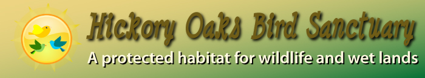

|  |
|
|
Hickory Oaks Bird Sanctuary
The Hickory Oaks Bird Sanctuary is located one mile east of Hickory Oaks Forest Preserve. This area of land was set aside by an act of the state legislature in 1969 to preserve the wetlands and act as a bird sanctuary. Many of the birds that pass through this area are migratory, and this sanctuary, with its wetlands, serves as a stopover for many of these birds. The wetlands provide a safe habitat and a source of food for many of the birds.
Several feet off the trails are numerous bird feeders. Visitors can purchase a small amount of seeds or other types of feed, place it in the feeders, and the sit on the nearby benches to watch or photograph the birds that will take advantage of the food. In several places around the 21-acre pond, blinds allow one to sit and observe or film and photograph the various species of waterfowl that visit our sanctuary.
Admission to the sanctuary is a simple donation. Membership in the Hickory Oaks Audubon Club is $25 for families, $15 for individuals, and $7 for students of all ages. The club meets the third Thursday of the month (except November). Sign up for a bird count assignment. See our Bird Count Web page for more information.